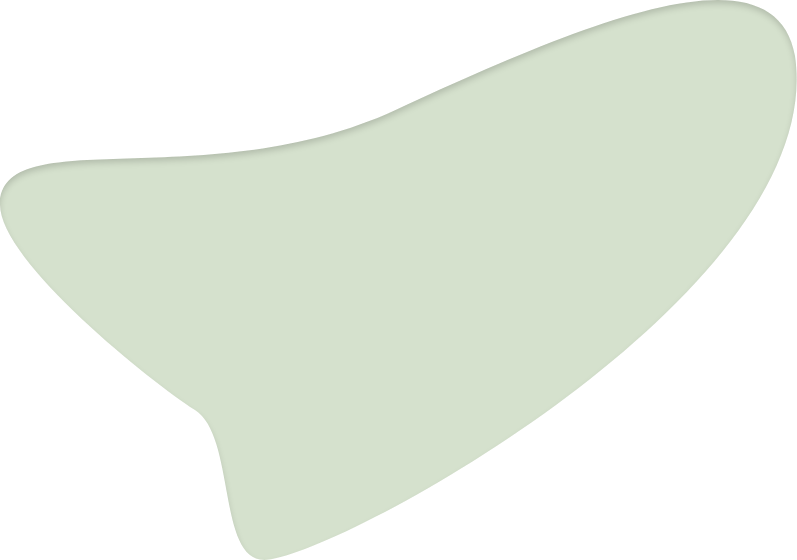

Wie zijn we?
Gelegen in hartje Brussel helpt huis van Vrede vzw thuislozen - alleenstaanden of koppels, met of zonder kinderen - die zelfstandig willen wonen. We bieden hiervoor individuele woonbegeleiding op maat.



"Met zorg, geduld en professionalisme streven we naar een stabiele
woonomgeving waar mensen tot rust kunnen komen, hun krachten
ontdekken en weer zin krijgen in het leven."
- Het huis

Onze visie en missie.
De visie van Huis van Vrede is er een van ontmoeting en zorg.
Wij werken aan verbinding en herstel van het geschonden vertrouwen
van de thuisloze: in zichzelf, de ander en de maatschappij.
Met de nodige zorg, geduld en professionalisme wil Huis van Vrede
haar mensen een stabiele woonomgeving bieden waar ze tot rust kunnen
komen en weer zicht op hun krachten kunnen krijgen. Op die manier
kunnen ze weer zin krijgen in het leven, toekomstplannen maken en
duurzame relaties aangaan.
Werking.
Huis van Vrede vzw biedt individuele hulpverlening op maat aan:
huisbezoeken, psychosociale gesprekken, administratieve
ondersteuning, budgetbegeleiding, aanleren van woonvaardigheden en
harmreduction. Naast begeleiding aan huis, hebben wij bureaus die
van 9 tot 17u op afspraak voor de cliënten toegankelijk zijn.
Huis van Vrede zet ppl doelbewust op gemeenschapsbeleving in door
als centrum onze begeleidingen een kans te geven bij een groep te
horen. Dit via een ontmoetingsruimte waar leden op vaste tijdstippen
in de week zonder afspraak toegang toe verkrijgen, zowel voor
administratieve of budgettaire vragen als ter ontspanning.
Er worden ook groepsactiviteiten georganiseerd zoals wekelijkse
maaltijden of feesten. Eenmaal per jaar organiseert Huis van Vrede
ook een vakantie voor de cliënten: drie dagen lang gaan enkele
hulpverleners met een groep van dertig personen op uitstap.